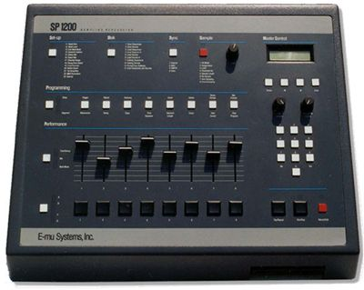

Scheda 039 · 1987 · Santa Cruz, California
E-mu SP-1200
Dieci secondi di memoria in tutto, divisi in quattro pezzi: e con quei dieci secondi si costruisce un genere
Campionatore e batteria in una scatola grigia, 12 bit e un filtro analogico: il suono sporco che l'hip hop delle origini non ha mai voluto pulire.
- ANNO
- 1987
- COSTRUTTORE
- E-mu Systems
- CAMPIONAMENTO
- 12 bit, 26,04 kHz
- MEMORIA
- 10 secondi
La macchinaChe cos'è
È un campionatore e una drum machine nella stessa scatola: si registra un pezzo di un disco — un rullante, un fiato, un urlo — e lo si suona dai pad o dalla tastiera, con tanto di sequencer per incastrare i giri. La memoria totale è dieci secondi, divisi in quattro banchi da due secondi e mezzo l'uno: con quei dieci secondi Marley Marl, il Bomb Squad e Pete Rock costruiscono buona parte del suono dell'hip hop newyorchese di fine anni Ottanta. Otto voci di polifonia, cento pattern, cento canzoni in memoria.
Chi l'ha costruitaDave Rossum
Dave Rossum fonda E-mu Systems nel 1971 a Santa Cruz, prima per costruire moduli analogici, poi campionatori: l'Emulator nel 1981, il Drumulator nel 1983, e nel 1987, con il contributo di Marco Alpert, l'SP-1200. Lo pensa come erede dell'SP-12, per unire la programmabilità del Drumulator alla capacità di campionare dell'Emulator II. Non lo progetta per l'hip hop: lo progetta per chi in studio non può permettersi un Emulator intero. Sarà l'hip hop a deciderne il destino.
Come funzionaCosa c'è dentro
Campiona a 26,04 kHz e 12 bit — molto meno di un CD — e proprio lì sta il carattere: la bassa risoluzione e i chip di filtro analogico SSM2044 tolgono le frequenze alte e ci mettono dentro una grana che un campionatore più fedele non avrebbe. Ogni suono singolo dura al massimo due secondi e mezzo. Cambiare l'intonazione di un campione, sul 1200, vuol dire farlo suonare più lento o più veloce: non c'è correzione, e infatti si sente.
Chi l'ha usataNei dischi
- The Bomb SquadCostruiscono con questo campionatore i collage di rumore di «It Takes a Nation of Millions to Hold Us Back» (Public Enemy, 1988)
- Pete RockFra i produttori che lo adottano come campionatore principale negli anni Novanta
- DJ PremierLo stesso, sui primi dischi con Guru nei Gang Starr
L'aneddotoUna storia
E-mu smette di costruirlo nel 1997: i chip SSM2044 del filtro non si trovano più sul mercato, e senza quelli il suono dell'SP-1200 non è più lo stesso. Il prezzo dell'usato, da allora, sale invece di scendere: più di trent'anni dopo, un campionatore del 1987 vale più di uno nuovo con specifiche tecniche molto più alte, perché quello che i produttori cercano non è la fedeltà, è la grana.
Avvertenze
Campiono a 12 bit: non è un difetto da correggere, è la mia voce. Se volete un suono pulito, non chiamate me.
Il carosello
Le 6 tavole


Da dove viene
Fonti
- «E-mu SP-1200» — Wikipedia (EN) verificata il 2026-09-22
- «The Legendary E-mu SP-1200 Sampling Percussion» — Vintage Digital Australia verificata il 2026-09-22
- «E-mu SP-1200» — Vintage Synth Explorer verificata il 2026-09-22
- «E-mu Systems Pioneered Sampling in Hip-Hop with the SP 1200» — The Music Origins Project verificata il 2026-09-22
Foto: 2xUeL · Pubblico dominio · Wikimedia Commons
Foto nelle tavole: 2xUeL · Pubblico dominio · Wikimedia Commons